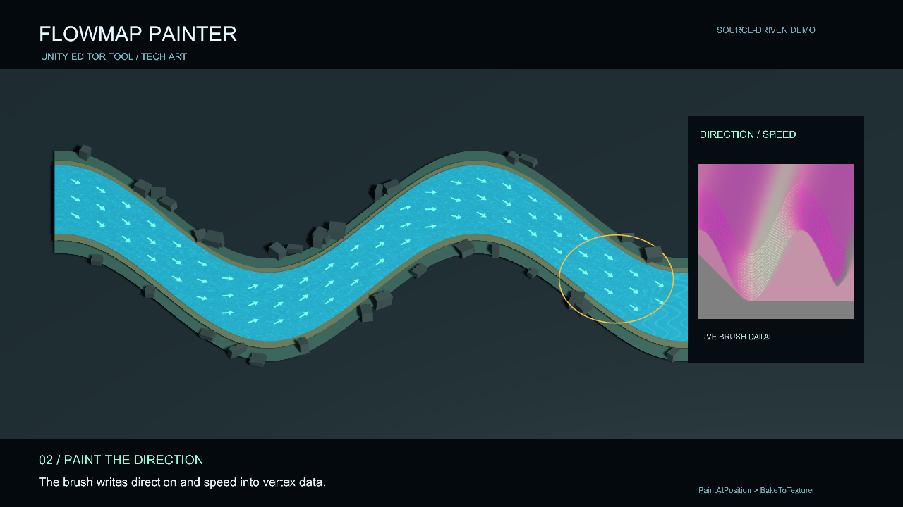
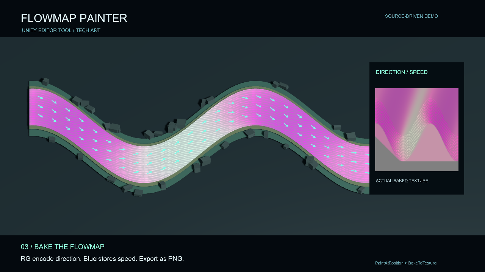

02 / Technical art tools
Flowmap Painter
Paint where the water should go. An in-editor brush for authoring flow direction on a mesh and baking that data into a texture.
- Focus
- Technical art tooling
- Built with
- Unity · C# · ShaderLab
- Approach
- Mesh data → flow texture
Make direction visible
Water needs to follow the shape of its environment. This tool lets flow direction be authored directly on the surface rather than inferred from a single global scrolling direction.
The brush blends direction and speed into per-vertex data using adjustable radius, strength and falloff. Vector previews make that data readable, and a UV-space bake turns it into a texture that the water shader can sample.
- 01
Paint
Blend local flow directions with a surface brush.
- 02
Read
Inspect the vector field before committing the result.
- 03
Bake
Convert the vertex data into a flowmap for the shader.


About the demo
The example river is demonstration geometry. Flow is artist-authored shader data, so the result depends on mesh density, UV layout and the baked texture resolution.